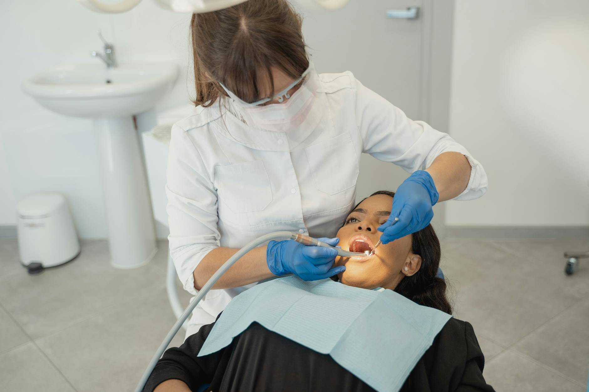

Mindannyian vágyunk arra a pillanatra, amikor feszengés nélkül, tiszta szívből tudunk nevetni. Egy ragyogó, egészséges mosoly nemcsak az önbizalmunkat növeli, de kapukat nyit meg a magánéletben és a karrierünkben is. Sajnos sokan halogatják a fogorvosi látogatást a korábbi rossz tapasztalatok vagy a kezelésektől való félelem miatt.
De mi lenne, ha azt mondanánk, hogy a fogászat ma már nem a kellemetlenségekről, hanem a kényelemről és a látványos átalakulásról szól? Ebben a cikkben megmutatjuk, hogyan találhatod meg a számodra tökéletes partnert a mosolyod megszépítéséhez, és miért érdemes szakértő kezekre bíznod a fogaid egészségét.
Amikor a tökéletes fogsorra gondolunk, gyakran csak a hollywoodi sztárok vakítóan fehér fogai jutnak eszünkbe. Azonban az egészséges fogak szerepe messze túlmutat a puszta látványon. A rágófunkció helyreállítása, a fogszuvasodás megelőzése és a fogíny egészségének megőrzése közvetlen hatással van az általános közérzetünkre és az emésztőrendszerünkre is.
Egy elhanyagolt fogászati probléma gócot képezhet a szervezetben, ami hajhulláshoz, bőrproblémákhoz vagy akár ízületi panaszokhoz is vezethet. Az időben elvégzett, szakszerű kezelésekkel mindez megelőzhető. A modern fogászat célja tehát kettős: visszaadni a rágás szabadságét és megteremteni azt a harmonikus esztétikát, amellyel újra büszkén mosolyoghatsz a világra.
A megfelelő szakorvos kiválasztása komoly bizalmi kérdés. Nem mindegy, hogy milyen hangulat fogad a váróban, mennyire figyelmes az orvos, és milyen technológiával dolgoznak a rendelőben. A mai rohanó világban az is kiemelten fontos, hogy a kezelések zökkenőmentesen, jól megközelíthető helyen történjenek.
Ha te is a tökéletes megoldást keresed, egy elhivatott és tapasztalt fogász Budapest szívében kiváló választás lehet számodra. Egy ilyen modern rendelőben a legújabb diagnosztikai eszközök és a fájdalommentes eljárások garantálják, hogy a látogatásod stresszmentes és hatékony legyen. A személyre szabott kezelési terv segítségével pedig pontosan tudni fogod, milyen lépések vezetnek el a vágyott eredményhez.
A technológia fejlődésének köszönhetően ma már szinte minden fogászati probléma gyorsan és esztétikusan orvosolható. Íme néhány olyan népszerű eljárás, amelyekkel látványos javulást lehet elérni:
Bár a professzionális kezelések elengedhetetlenek, az otthoni ápolással te magad is sokat tehetsz a fogaid épségéért. Alkalmazd ezt a három egyszerű szabályt a mindennapokban:
A mosolyod az egyik első dolog, amit az emberek észrevesznek rajtad. Nem éri meg elrejteni vagy feszengeni miatta. Egy tapasztalt fogorvosi csapat segítségével az út a tökéletes fogsorig sokkal egyszerűbb és kellemesebb, mint gondolnád. Ne halogasd tovább a döntést: lépj rá a magabiztos, egészséges és ragyogó mosoly útjára még ma, és élvezd az életet kompromisszumok nélkül!